Un primo cubierto — que no divide a nada
Cómo una regla sobre números primos puede ser cierta paso a paso y falsa en conjunto. Escrito para quien nunca vio esto.
1. La pregunta, con peras y manzanas
Tomá un número entero, por ejemplo 12. Sus ladrillos primos son 2 y 3, porque 12 = 2 × 2 × 3. Ahora sumá todos los números que dividen a 12: 1 + 2 + 3 + 4 + 6 + 12 = 28.
El juego es éste. Preguntamos: ¿los ladrillos del número dividen también a esa suma? Los ladrillos de 12 son 2 y 3, y la suma es 28. El 2 divide a 28, pero el 3 no — 28 ÷ 3 no da entero. Así que 12 pierde.
Probá con 6. Sus ladrillos son 2 y 3, y la suma de sus divisores es 1 + 2 + 3 + 6 = 12. El 2 y el 3 dividen a 12. Así que 6 gana.
Los ganadores forman una lista: 6, 24, 28, 40, 54, 96, 120, … alguien la catalogó hace años. La pregunta de esta página es otra, y más básica:
¿Qué primos tienen permitido aparecer dentro de un ganador?
El mismo juego se puede jugar con otra receta en vez de «suma de divisores». Acá se usa una receta que convierte un ladrillo q elevado a una potencia en otro número, y se hace la misma pregunta. Y la respuesta trae una sorpresa.
2. Cinco palabras, cada una con un número chico al lado
| Palabra | Qué quiere decir | Ejemplo más chico |
|---|---|---|
| primo | número mayor que 1 cuyos únicos divisores enteros son 1 y él mismo | 2, 3, 5, 7, 11, 13 |
| ladrillos | los primos distintos que multiplicados dan el número | los de 12 = 2·2·3 son 2 y 3 |
| receta | una regla fija que convierte cada ladrillo y su potencia en un número | la nuestra convierte 7 en 7² − 7 + 1 = 43 |
| cubierto | un primo p está cubierto cuando algún otro ladrillo produce un número que p divide | el 3 está cubierto, porque 2² − 2 + 1 = 3 |
| ganador | número en el que cada ladrillo está cubierto por los otros ladrillos de ese mismo número | 100009 = 7² · 13 · 157 |
3. La receta, paso a paso
Nuestra receta toma un ladrillo q elevado a la potencia e y devuelve q2e − qe + 1. Entonces:
- ladrillo 2 a la primera → 4 − 2 + 1 = 3
- ladrillo 7 a la primera → 49 − 7 + 1 = 43
- ladrillo 13 al cubo → 13⁶ − 13³ + 1 = 4824613, que es 19 × 271 × 937 — o sea que el 19 lo divide
Para decidir si un número es ganador se escriben sus ladrillos, se les aplica la receta a cada uno, se multiplican los resultados y se comprueba que cada ladrillo divida a ese producto.
Ahora dibujá flechas. Poné una flecha del ladrillo q al primo p cada vez que la receta aplicada a alguna potencia de q dé un número que p divide. Un número es ganador exactamente cuando, en el dibujo de sus propios ladrillos, a cada ladrillo le entra al menos una flecha.
4. Uno que resolvés vos
¿Está cubierto el 3? Aplicá la receta al ladrillo 2, primera potencia: 2² − 2 + 1 = 3. ¿El 3 divide a 3?
Respuesta
Sí. Así que el primo 3 está cubierto: hay una flecha que le entra, desde el 2. De hecho hay muchas — contando sólo primos por debajo de 8000, son exactamente 511 los que le mandan flecha.
Ahora la trampa. Todo primo que le manda flecha al 3 deja resto 2 al dividirlo por 3 — comprobalo con 2, 5, 11, 17, 23. Y todo primo que está él mismo cubierto deja resto 1 al dividirlo por 6 — comprobalo con 7, 13, 19, 31. ¿Puede un primo hacer las dos cosas?
Respuesta
No. Un primo que deja resto 1 al dividirlo por 6 deja resto 1 al dividirlo por 3, no 2. Las dos listas no se tocan: de esos 511 primos que apuntan al 3, están cubiertos exactamente 0.
5. De dónde sale la información
Nada de esta página es una opinión. Todo lo calcularon los programas de
src/ de este repositorio, y lo vuelve a comprobar
verify.py, que cualquiera corre en segundos y sin instalar nada.
Se usan dos métodos completamente separados, a propósito. Uno trabaja con el dibujo de flechas. El otro lo ignora por completo: toma todos los enteros hasta 400000, los parte en ladrillos, aplica la receta, multiplica y divide — aritmética pelada. Donde los dos tienen que coincidir, se comparan. Coinciden.
6. Qué se encontró
Volvamos al 3. Está cubierto: le entran flechas. Pero un ganador se arma sólo con primos que estén ellos mismos cubiertos adentro, y ninguno de los que apuntan al 3 califica. Entonces esas flechas no sirven, y:
el 3 está cubierto y no divide a ningún ganador.
Buscando entre todos los números hasta 400000 aparecen 3 ganadores para esta receta — el más chico es 100009 = 7²·13·157 — y 0 son divisibles por 3.
Lo segundo que se encontró es cuántos primos quedan afuera. Esa cuenta no es azarosa: la decide un grupo de simetrías pegado a la receta, y la respuesta es una fracción exacta. Entre las recetas probadas salen 12 fracciones distintas — o sea que el valor 1/2 de trabajos anteriores era propiedad de las dos recetas que se habían mirado, no del problema.

Lo tercero es dónde puede ocurrir la sorpresa. Barriendo 310 recetas, los primos cubiertos-pero-excluidos aparecen 14 veces, y cada uno de ellos es un primo ramificado — uno donde la receta desarrolla una raíz repetida. Para cada receta son finitos, así que la sorpresa es rara y se puede ubicar.
Y cuando un primo sí divide a un ganador, se demuestra exhibiendo uno: un lazo cerrado de flechas es un ganador, escrito.
7. Cómo se sabe que no está mal
Dos costumbres hacen casi todo el trabajo.
Un control positivo
Encontrar cero de algo no prueba nada por sí solo — puede que la búsqueda esté rota. Así que la misma búsqueda se corre sobre una receta donde la respuesta se sabe que es «muchos». Con la receta del estilo suma-de-divisores, el programa idéntico encuentra 261 ganadores divisibles por 3. La búsqueda funciona; el cero de arriba es real.
Recalcular algo publicado
verify.py reconstruye desde cero la lista de números cuyos
ladrillos dividen a la suma de sus divisores, y la compara con los 49 términos
publicados de manera independiente en la Enciclopedia en Línea de Sucesiones de
Enteros, entrada A175200. Coinciden término a término. Ése es un control que
nadie de acá maneja.
8. Para qué sirve
Modestamente: dice, mirando sólo la receta y sin buscar nada, qué primos no pueden aparecer nunca. Si uno anda cazando ganadores, eso saca una fracción fija de los primos antes de empezar — y avisa que la regla obvia de un paso no es toda la regla, así que una búsqueda que le crea va a mirar donde no puede haber nada.
9. Lo que no dice
- No dice que el juego de la suma de divisores tenga primos excluidos. No los tiene: ahí aparecen todos.
- No demuestra que la cota de abajo y la de arriba siempre se toquen. Se tocaron en todos los casos probados, sin excepción, pero eso es una medición y queda escrito como conjetura, no como teorema.
- La regla de la fracción no es matemática nueva: es un teorema clásico de Frobenius de 1896, aplicado acá a un objeto nuevo. Se dice con todas las letras y se le da el crédito.
- No dice nada sobre cuántos ganadores hay por debajo de un tamaño dado. Se puso a prueba una hipótesis sobre eso y falló, y la falla queda registrada en vez de escondida.
Glosario
| Palabra | Significado | Ejemplo |
|---|---|---|
| radical | producto de los primos distintos de un número | el radical de 12 es 6 |
| orden de a módulo p | cuántas veces hay que multiplicar a por sí mismo hasta llegar a 1, trabajando con restos al dividir por p | 2, 4, 1 — el orden de 2 módulo 3 es 2 |
| raíz módulo p | un resto que hace que la receta dé un múltiplo de p | 2 es raíz de x²−x+1 módulo 3, porque 4−2+1 = 3 |
| primo ramificado | primo donde la receta desarrolla una raíz repetida | x²−x+1 se vuelve (x+1)² módulo 3 |
| certificado | lista corta de números con la que cualquiera confirma una afirmación a mano | 13³ y 19², dos divisiones |
| densidad | la fracción, a la larga, de primos con una propiedad | la mitad de los primos deja resto 1 módulo 4 |
Para seguir leyendo
Nivel 1 — por acá se empieza, sin fórmulas
- OEIS A175200 — la lista de verdad de los números cuyo radical divide a la suma de sus divisores. Entrá y bajá: es el objeto, sin nada en el medio.
- Wikipedia: teorema de densidad de Chebotariov — la forma moderna de la regla de conteo de la sección 6, con la versión histórica de Frobenius en los primeros párrafos.
Nivel 2 — un libro de texto, con el capítulo
- K. Ireland y M. Rosen, A Classical Introduction to Modern Number Theory, 2.ª ed., Springer. Capítulo 4 para órdenes y raíces módulo un primo; capítulo 13 para los polinomios ciclotómicos, que son las recetas que se usan acá.
- B. Sury, «Frobenius and His Density Theorem for Primes», Resonance 8(12) (2003) 33–41 — un relato corto y legible de exactamente la regla de conteo de la sección 6.
Nivel 3 — contra qué se compara este trabajo
- P. Stevenhagen y H. W. Lenstra, «Chebotarëv and his density theorem», Math. Intelligencer 18 (1996) 26–37. El enunciado de densidad que se usa acá es de ellos, no nuestro.
- P. Pollack y C. Pomerance, «Prime-perfect numbers», INTEGERS 12A (2012), Paper A14. La familia que contiene el caso suma-de-divisores de este juego, estudiada mucho antes que este trabajo.
- C. Jordan (1872) sobre grupos de permutaciones transitivos: la razón por la que una receta irreducible de grado 2 o más siempre excluye una fracción positiva de los primos.